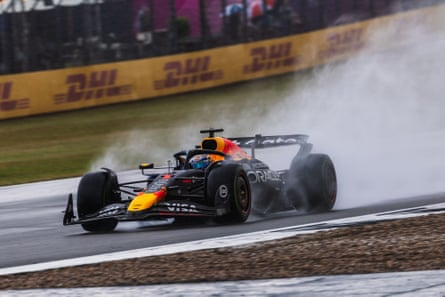

E ven as the reverberations from the shock sacking of Christian Horner as team principal of Red Bull are still being felt across Formula One and their thunderous echo remains, whether all this sound and fury will have been quite enough to keep Max Verstappen at the team remains a moot point.
When it was announced on Wednesday that Horner had been released from his post as team principal and chief executive of Red Bull after 20 years in charge and enormous success, pivotal to the decision was seemingly the desire to prevent the four-time world champion from being tempted away. Horner’s removal a price the parent company was willing to pay.
That Red Bull GmbH finally moved decisively against Horner after almost two years of internecine strife appears to have met the goal of the Verstappen camp, led by the driver’s father Jos, who made little secret of his desire to be rid of this turbulent team principal.
This did not appear a likely outcome when the furore over allegations against Horner of inappropriate behaviour toward a female employee died down after he was exonerated by an independent investigation. Yet while that had perhaps been the spark, what really stoked the fire and probably provoked decisive action at Red Bull GmbH was the downturn in results and the problems that led to that point. If the power struggle is over, the fundamental issues remain.
This position was pointedly noted by Verstappen’s manager Raymond Vermeulen after Horner’s removal. “We are looking for more performance so that we can return to the top,” he said. “In that respect nothing will change.”
The position is stark: Red Bull won 21 of 22 races in 2023, as dominant as any season in F1 history, but last year Verstappen managed to just claw out the title and now trails the championship leader Oscar Piastri by 69 points. Red Bull are fourth in the constructors’ championship and then only because of Verstappen. He has scored 165 points this year, the team’s second drivers’ just seven.
Central to this downturn has been the performance of their car, about which Verstappen has been blunt in his condemnation. Yet for all their efforts, it shows no sign of improving. Since Red Bull lost their designer Adrian Newey to Aston Martin in 2024, the balance problems that plagued it in the second half of that season have continued into 2025 and been further exposed as other teams have improved.
This cannot be absolutely attributed to Newey’s absence but it must be a factor, and that the current Red Bull design team, under technical director Pierre Waché, has been unable to solve the problems will concern Verstappen. The car Newey designed for the 2022 regulations was built to suit Verstappen and for two years they were completely dominant.
However, when the other teams began catching up and Red Bull had to develop, the negative traits of the car and its increasingly narrow performance window only became more and more severe. The pursuit of extreme performance at the expense of drivability was based on Verstappen’s capability to manage it but it has reached the point where even the Dutchman is barely managing and his teammates are adrift.
Max Verstappen, who finished fifth at the British Grand Prix, wants a competitive Red Bull car so he can compete for a fifth world title.Photograph: Jay Hirano/Shutterstock
All of this may well cast doubt in his mind as to how they will fare for the major regulation change of 2026, towards which he is now looking and which is the motivation behind him opening talks with Mercedes .
Moreover there has been the loss of other key staff alongside Newey in the past two years. Horner was always bullish that the team had strength in depth but equally they were pillars of the stability Verstappen craves. Especially noticeable was the departure of personnel in key roles, such as Rob Marshall, the chief engineering officer, Jonathan Wheatley, the sporting director and Will Courtenay, the head of strategy.
Then there is the elephant in the room, anxiously hopped-up on energy drink, in the form of Red Bull building their own engines for the first time next season.
Mercedes is believed to already be leading the field and have form in this regard as their mastery of the 2024 regulations – a similarly engine-focussed formula – proved. Emerging in 2026 with a dominance similar to the one they enjoyed that year would make their car the most desirable seat on the grid.Red Bull’s project is an enormous and daunting step into the unknown and one where notably even manufacturers with a proven track record in building engines have struggled, as Honda’s most recent travails with McLaren attest.
Verstappen will probably have a good idea where the Red Bull engine programme is and Mercedes may well have given him an indication of where they are, if they are to tempt him on board. Performance-led factors are likely to carry more weight with Verstappen than personality or politics and they remain as pertinent now as they were on the day before Horner was dismissed.
For the moment, then, it would seem the Verstappens have their way, certainly Jos, in Horner’s removal. For his son, however, who wants calm and focus, throwing in a new team principal halfway through developing a car for new regulations does not appear to be a recipe for a serene succession into a successful future. Certainly in comparison to the stability at Mercedes.
Indeed the 48-year-old Frenchman Laurent Mekies faces a similarly intimidating task to the one Horner addressed when he began building Red Bull from the ashes of Jaguar in 2005. Whether Verstappen is there to see it through with him remains to be seen, Horner or no Horner.